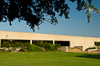
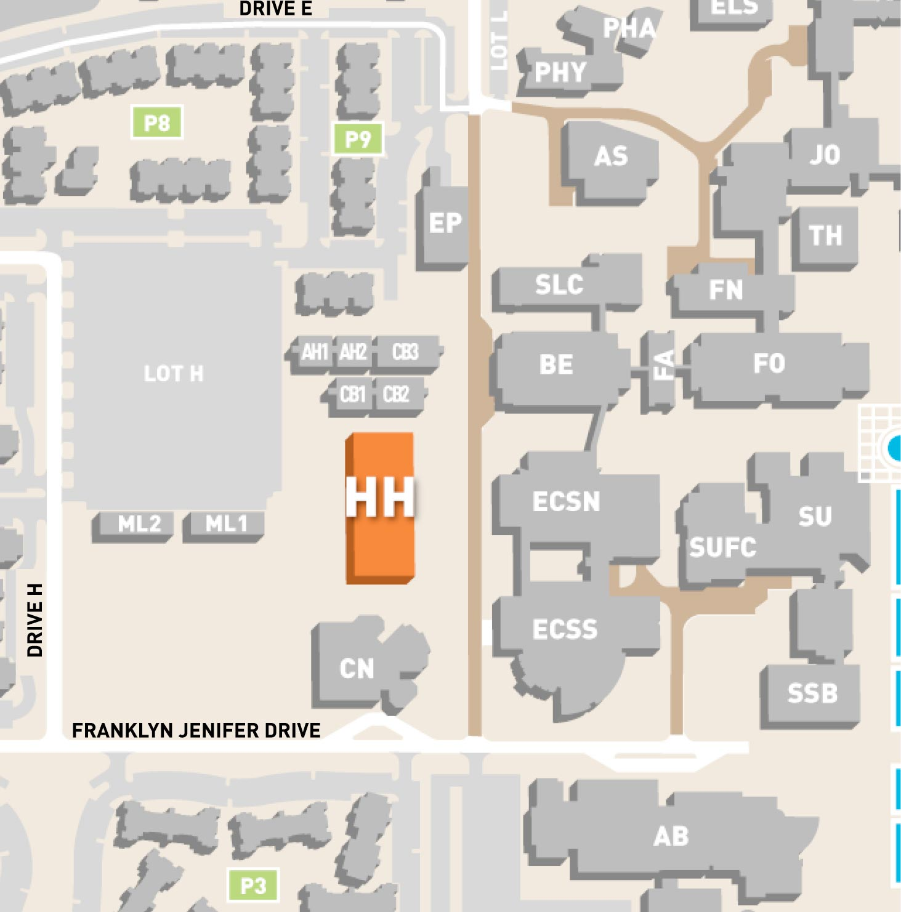

<a href="./building" class="btn btn-warning">Go Back</a>

<br/>
<br/>

<h1 style="font-size:large;">Karl Hoblitzelle Hall</h1>

<div style="width:300px;"></div>
<br/>
<div style="width:300px;"></div>
<br/>
<br/>
<a href="http://www.utdallas.edu/locator/HH_2"><button type="button" class="btn btn-outline-primary">Room Locator</button></a>

<div  class="include-piece">&nbsp;</div>
<div id="page-content">
    <div>Andrew R. Cecil Auditorium</div>
    <div>Academic Bridge</div>
    <div>Community Engagement</div>
    <div>Interdisciplinary Studies</div>
    <